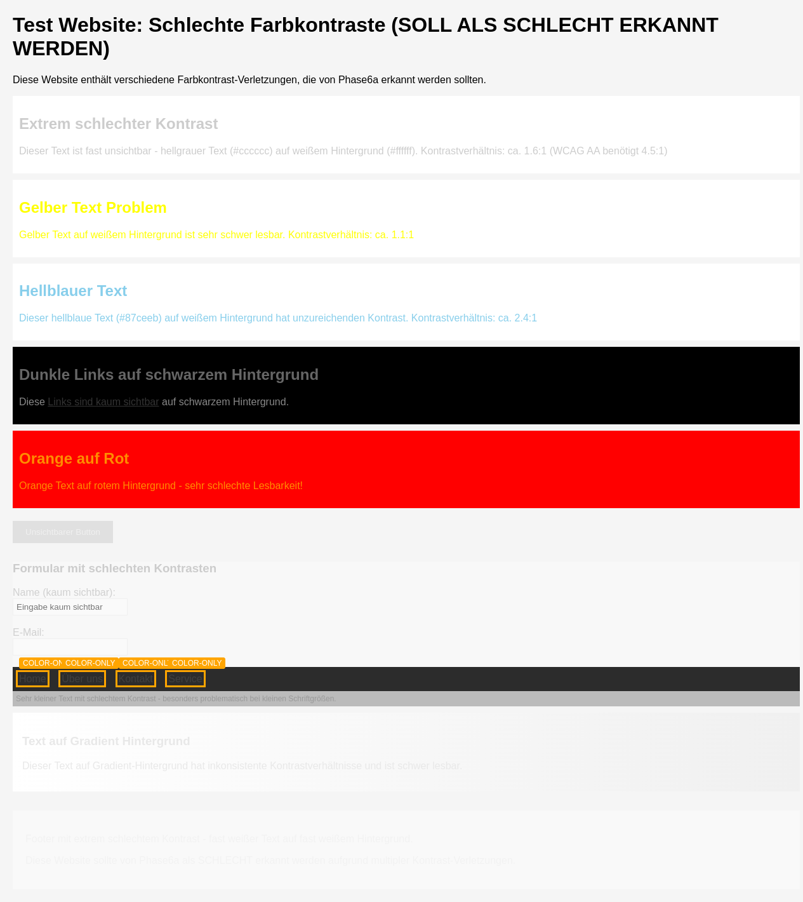
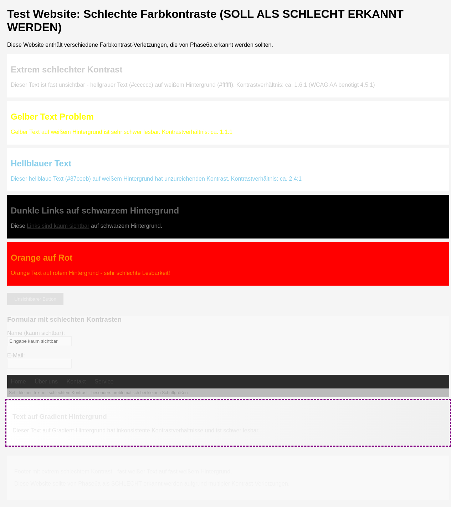
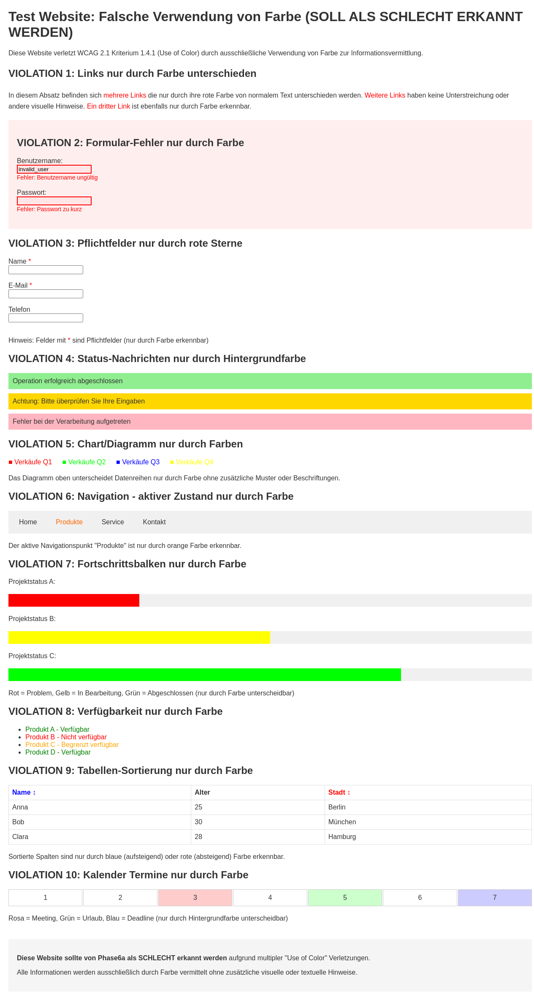
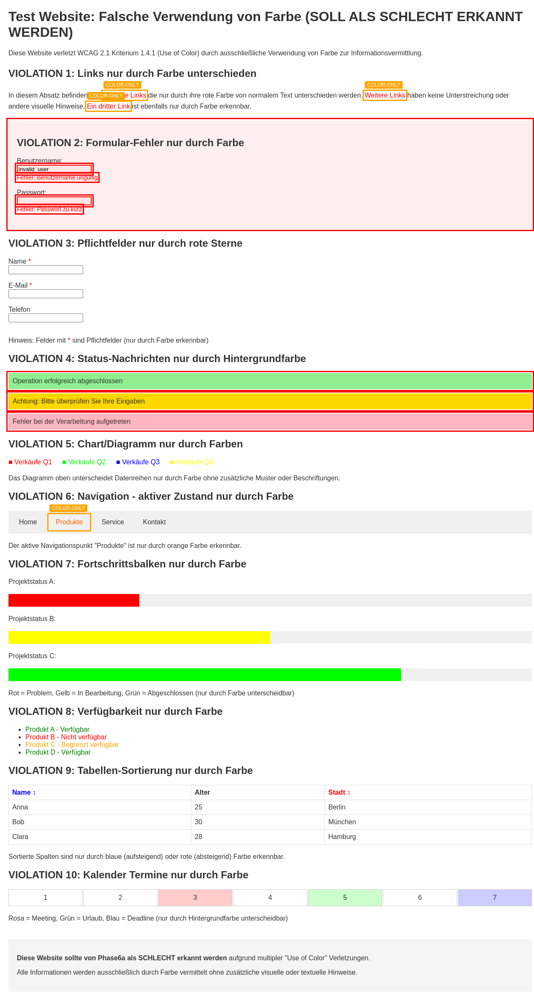
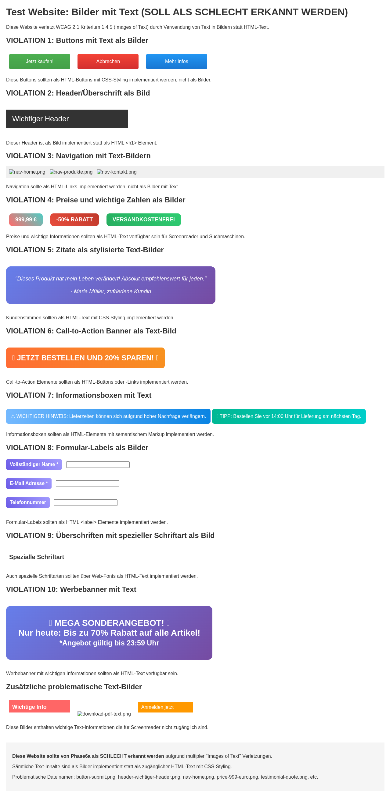
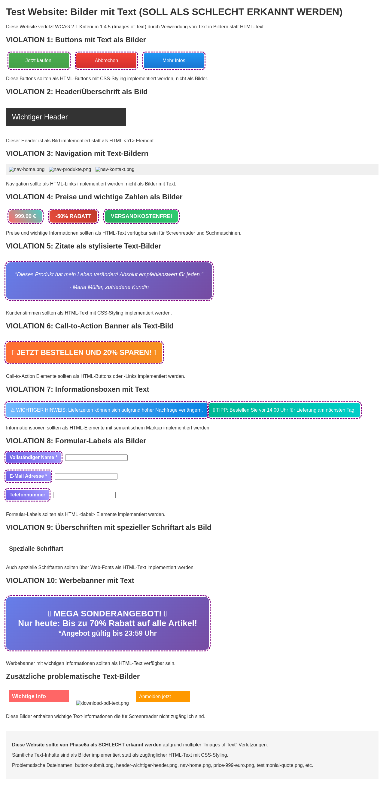
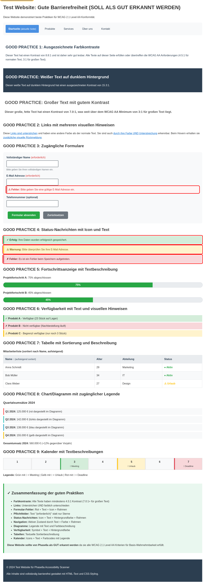
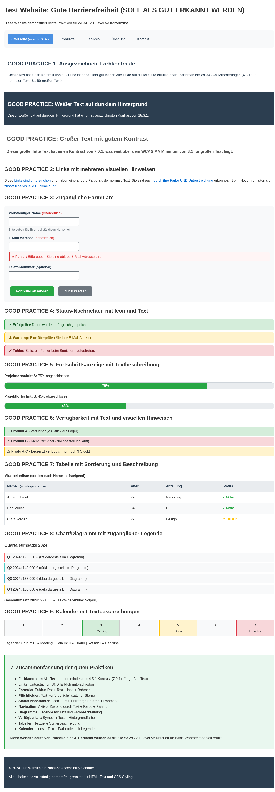

bad-color-contrast
File: bad-color-contrast.html
Original + Contrast Heatmap


Color Usage + Text Images


📊 Analysis Summary
Contrast Issues: N/A elements fail requirements
Color-Only Issues: 4 elements rely only on color
Text Images: 1 suspected text images
bad-use-of-color
File: bad-use-of-color.html
Original + Contrast Heatmap


Color Usage + Text Images


📊 Analysis Summary
Contrast Issues: N/A elements fail requirements
Color-Only Issues: 12 elements rely only on color
Text Images: 0 suspected text images
bad-images-of-text
File: bad-images-of-text.html
Original + Contrast Heatmap


Color Usage + Text Images


📊 Analysis Summary
Contrast Issues: N/A elements fail requirements
Color-Only Issues: 0 elements rely only on color
Text Images: 14 suspected text images
good-accessibility 🚨 CRITICAL TEST
File: good-accessibility.html
⚠️ This should pass all scanners with minimal violations!
Original + Contrast Heatmap


Color Usage + Text Images


📊 Analysis Summary
Contrast Issues: N/A elements fail requirements
Color-Only Issues: 5 elements rely only on color
Text Images: 0 suspected text images